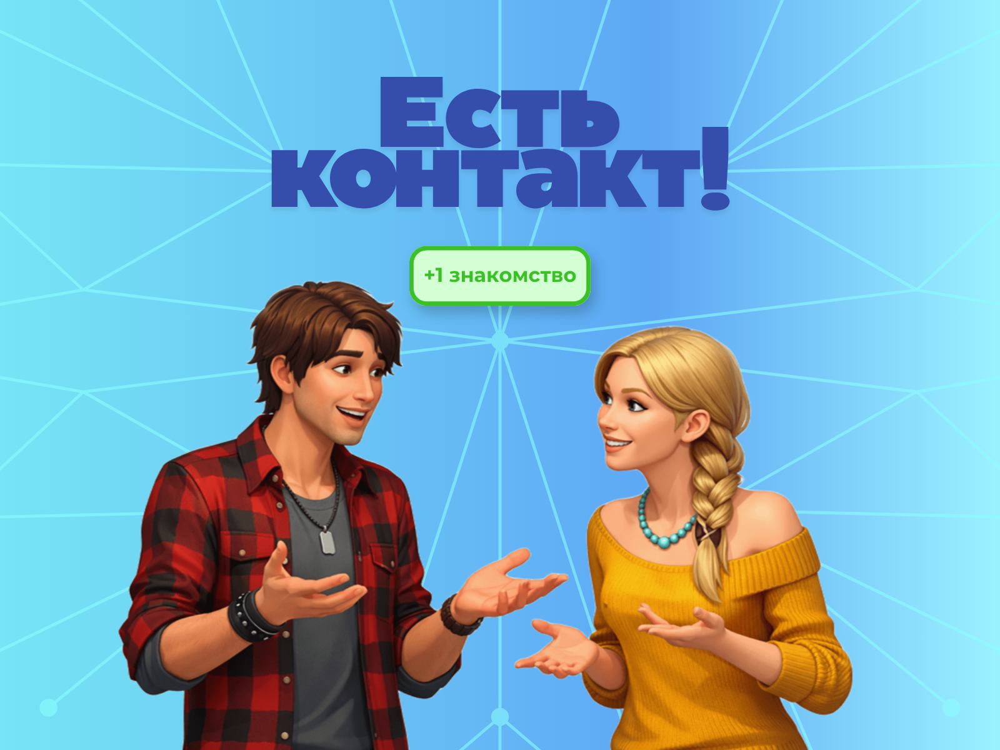
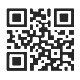

Тест: твой уровень нетворкинга
Ответь на 10 вопросов — узнаешь, насколько ты готов к эффективному нетворкингу.
Вопросы появляются по два. Выбери по одному варианту ответа на каждый.
Привет, меня зовут Злата!
Я недавно в компании, работаю в отделе маркетинга, продвигаю наши препараты. Через две недели мне предстоит посетить мою первую большую конференцию. Руководитель поручил завести как можно больше знакомств с партнёрами. Но о нетворкинге я знаю лишь понаслышке, так что надо прокачивать!
Злата немного переживает, но у неё есть цель, энергия и решимость попробовать. Узнаёшь себя? Тогда вам точно по пути!

Включаем режим подготовки
Злата открыла ноутбук, чтобы подготовиться к конференции.
На рабочем столе три папки. Нажми на каждую:
- Расписание конференции — узнаешь, как грамотно учесть его
- Цель — перейдёшь к упражнению
- Карта мероприятия — изучишь план площадки
Открой все три папки, чтобы продолжить
Упражнение: для чего тебе нетворкинг?
Можешь ли ты уже сформулировать, для чего лично тебе нужен нетворкинг?
Три нити нетворкинга
Нетворкинг строится на трёх принципах. Собери каждое слово из бусин-букв, чтобы узнать их.
Сними маски своих страхов
Выбери те, которые про тебя. Нажми на маску — она снимется.
Как ты будешь с этим справляться?
Запиши стратегию для каждого страха. Подсказки внутри.
Колесо баланса контактов
Прочитай название сферы и подумай: «Есть ли у меня люди, к которым я могу обратиться в этой области?»
Оцени от 1 до 10:
- 1–2 — контактов почти нет
- 3–4 — есть пара человек, но связь слабая
- 5–6 — есть несколько знакомых, связь не системная
- 7–8 — есть надёжные контакты
- 9–10 — сильная сеть: активная связь, взаимная польза
Оцени важность каждой сферы
Сколько знакомств ты заведёшь?
Теория «6 рукопожатий»
Представь: ты сидишь вечером с чаем, случайно открываешь профиль какой-то «звезды» фармы или науки и думаешь: «Ну вот, это вообще из другого мира. Как я до такого человека когда-нибудь доберусь?» Но постой:
Между тобой и почти любым человеком на планете — всего несколько шагов знакомых.
Не сотни, не тысячи, а примерно 6 рукопожатий. Тебе не нужно знать всех, достаточно нескольких правильных людей, чтобы выйти куда угодно.
Теория шести рукопожатий гласит: любой человек на Земле связан с любым другим через цепочку из примерно шести человек.
Формула простая:
Каждое звено в цепочке — это «рукопожатие».
Это не просто красивая легенда.
Ещё в середине XX века психологи и социологи проводили эксперименты: просили людей переслать письмо незнакомцу в другой части страны, передавая его только знакомым. В среднем получалось около 5–6 шагов.
Потом, в эпоху соцсетей, крупные платформы анализировали реальные связи между миллионами людей и получали похожие цифры: цепочка между двумя случайными людьми — 3–5 промежуточных контактов.
То есть:
- Мир действительно связан плотнее, чем кажется.
- Наши сети знакомых перекрываются, создавая огромную «паутину» контактов.
У этого есть три важных следствия:
1. Каждое знакомство ценнее, чем кажется.
Ты знакомишься не только с человеком перед тобой, но и с его окружением.
2. Твоя задача — строить мосты между «островами».
Особенно ценны контакты, которые связывают разные круги.
3. Качество важнее количества.
Тебе нужны люди, которые реально готовы порекомендовать, познакомить, подсказать.
Нажимай на человечков ниже, чтобы добавить их в план, затем «Запланировать».
Где ты будешь знакомиться?
У каждого есть свои места, где он чувствует себя как рыба в воде. Именно поэтому так сложно освоить «правильное поведение на вечеринках», если ты их не очень любишь.
Глупо пытаться научиться «очаровывать людей на конференциях», если одна только мысль о них вызывает мурашки.
Задание: перетащи локации в подходящую категорию слева.
Задание: перетащи локации в подходящую категорию слева.
Ставим чёткую цель
Сформулируй свою цель нетворкинга по модели SMART. Заполняй ветви по порядку — новая появится, когда предыдущая заполнена.
Конкретная
Измеримая
Достижимая
Релевантная
Ограниченная по времени
Следующий шаг
SMART-цель поставлена — отлично! Теперь пора подготовить главный инструмент нетворкера.
логотип

QR-код на блогЗачем нужна визитка
Многие думают: «Да кому нужны визитки, есть же соцсети». Но в живом общении визитка решает сразу несколько задач:
- Закрепляет знакомство — после десятка разговоров люди забывают имена. Визитка — это якорь.
- Облегчает продолжение общения — вместо «Я вам напишу…» можно сказать: «Вот мои контакты».
- Передаёт профессиональный образ — кто ты? Чем полезен?
- Помогает «положить тебя на нужную полочку» — через пару дней человек вспомнит, кто ты.
Что должно быть на визитке
Визитка отвечает на 3 вопроса: Кто ты? Чем полезен? Как связаться?
1. Имя и фамилия — крупно и читаемо.
2. Должность + сфера — на человеческом языке.
3. Компания — логотип + название.
4. Контакты — email, телефон, один профессиональный профиль.
5. Цепляющая подсказка — короткая фраза о твоей экспертизе.
6. Дизайн — читаемость важнее красоты.
+7 (999) 123-45-67
vk.com/in/zlata-kovalchuk
Задание
Заполни визитку слева, перетащи элементы на нужные места и нажми «Проверить».
Следующий шаг
Визитка готова — отлично! Теперь нужно позаботиться об онлайн-присутствии. Первое, что видит человек в твоём профиле — это фото.
Выбери фото для профиля Златы
Перед тобой 6 фотографий Златы. Выбери ту, которая лучше всего подходит для профессионального профиля. Вспомни критерии из теории.
Аватарка для профиля
Аватарка — это первое рукопожатие онлайн. Ещё до того, как человек прочитает статус, он уже что-то решил по фото.
Онлайн-профиль без хорошей фотографии:
- вызывает меньше доверия
- реже получает ответы
- хуже запоминается после встречи
Принципы хорошей аватарки
1. Лицо — главный герой. Кадр по плечи или по грудь, смотрим в камеру.
2. Чистый фон. Однотонная стена, размытый офис. Без бардака и толпы людей.
3. Хороший свет. Естественный свет от окна, без резких теней.
4. Одежда как на встрече. Чистая, аккуратная, спокойные цвета.
5. Живое выражение лица. Лёгкая улыбка, доброжелательный взгляд.
Главные вопросы к фото:
- Похож ли ты на себя в реальной жизни?
- Хочется ли с тобой заговорить, глядя на это фото?
Задание: Выбери фото для профиля Златы
Перед тобой 6 фотографий Златы. Выбери ту, которая лучше всего подходит для профессионального профиля, опираясь на критерии из теории.
Статус в соцсети
Статус — это твой мини-бейдж в мире нетворкинга. По нему человек за 1–2 секунды решает:
- кто ты по роли
- к какой «полочке» тебя отнести
- с какими вопросами к тебе можно обратиться
Статус помогает:
Быть понятным — у человека не возникает вопроса: «А что он/она вообще делает?»
Привлекать «своих» людей — если ты обозначаешь сферу и интерес, к тебе чаще приходят с релевантными предложениями.
Стать «находкой» в нужный момент — кто-то думает: «Нужен человек, который шарит в фарме» и, увидев твой статус, думает: «О, вот оно!»
Главное правило
Статус — не пафос, а «подсказка, кто ты и чем полезен».
Плохие варианты:
- Профессионал своего дела
- Ищу себя
- Work hard, dream big
Это ничего не говорит о том, чем ты реально занимаешься.
Из чего состоит хороший статус
Роль + Сфера/Контекст + Фокус/Интерес
Примеры:
- Специалист по качеству в клинических исследованиях
- Регистрационный менеджер в фарме
- Специалист по качеству в клинике | Аудиты, SOP, инспекции
- Помогаю запускать клинические исследования по GCP
- Помогаю выводить фармпрепараты на рынок РФ и ЕАЭС
Алгоритм
Представь, что тебя спрашивают: «Ты в фарме/медицине чем занимаешься?» и нужно ответить одним предложением.
- Кем ты работаешь сейчас? (должность/роль)
- В какой области? (клиника, качество, регистрация, производство, R&D, маркетинг)
- Есть ли конкретный фокус? (редкие заболевания, цифровые решения, GMP)
Задание: Придумай свой статус
Заполни три поля ниже:
- Напиши свою роль и сферу
- Добавь специализацию
- Укажи конкретный фокус/интерес
Нажми «Установить статус» — и увидишь, как он будет выглядеть.
Создай свой крючок-самопрезентацию
Три секунды — именно столько у тебя есть, когда незнакомый человек открывает твой профиль.
Твоя задача — написать крючок-самопрезентацию: одну-две строчки для статуса, подписи или письма, после которых человек думает: «Хочу узнать об этом человеке больше»
Последний шаг!
Крючок-самопрезентация готов. Осталось собрать сумку нетворкера и изучить карту мероприятия.
Поздравляю, курс пройден!
Ты прошёл(а) весь путь подготовки к нетворкингу вместе со Златой. Теперь у тебя есть всё, чтобы уверенно идти на любое мероприятие!